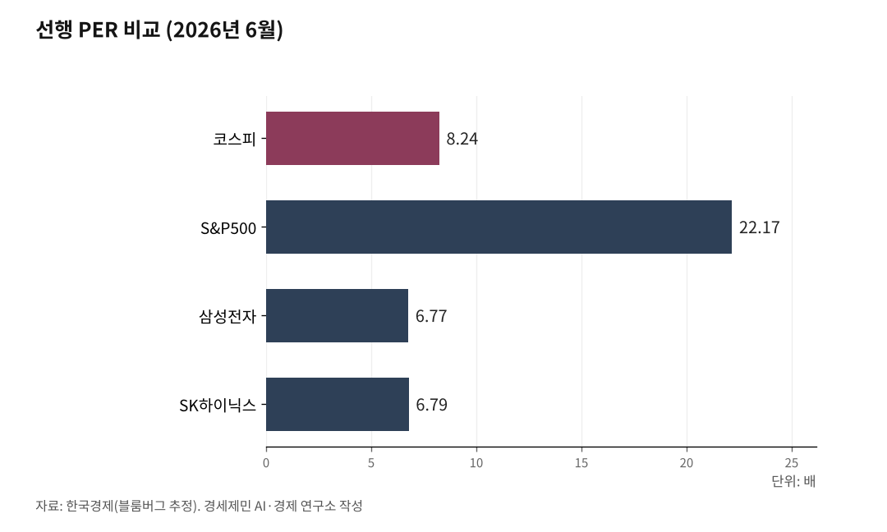

[코스피 9000 코앞] ③
거품이 아니라 실적이다, 주도주가 장을 가른다
지수는 사상 최고인데 다섯 중 넷은 빠졌다, 끌어올린 건 반도체 두 종목이다
실적이 받치는데도 싸다, 다만 그 값은 미래 이익을 미리 당겨놓은 조건부다
쏠림과 사이클이라는 위험도 그 안에 함께 있다
[사진①] 6월 1일 서울 하나은행 본점 딜링룸 전광판. 코스피 8700선이 표시된 화면.

코스피가 6월 1일 8788.38로 장을 마쳤다. 하루에만 3.68% 급등해 종가 사상 최고를 새로 썼고, 장중 8874.16까지 올랐다. 1년 전 13위이던 시가총액은 대만과 인도를 제치고 세계 5위에 올라섰다.
이날 급등의 방아쇠는 엔비디아였다. 젠슨 황 최고경영자가 차세대 칩에 삼성전자와 SK하이닉스의 HBM4를 쓴다고 밝히자, 두 종목이 장을 끌어올렸다. 삼성전자는 하루 9% 넘게 올라 시가총액 2000조원을 처음 넘었다.
그런데 그날 오른 종목은 179개, 내린 종목은 732개였다. 지수는 사상 최고인데 다섯 중 넷이 빠졌다. 시장 전체가 오른 게 아니라 주도주가 끌었다.
이 글은 그 갈림을 읽으려는 사람에게 건넨다.
1. 거품이 아니라서 다르다
이 상승이 거품이라면 답은 간단하다. 피하면 된다. 받치는 것이 실적이라면 이야기가 달라진다.
거품은 이익 없이 기대만으로 주가가 부푸는 것을 말한다. 2000년 정보기술 거품 때가 그랬다. 투자자들은 회사 이름에 인터넷이라는 말만 들어가면 샀고, 거품이 꺼지자 매출도 이익도 없던 종목 대부분이 휴지가 됐다.
지금은 다르다. 상장사 영업이익 전망은 800조원대로, 한 해 전 300조원 안팎에서 곱절 넘게 뛰었다. 한국은 국내총생산 대비 제조업 비중이 세계 최고 수준인 제조업 강국이고, 반도체와 자동차, 조선이 그 이익을 떠받친다.
상법이 바뀌고 기업이 자사주를 사들여 없애면서, 한국 증시를 오래 누르던 코리아 디스카운트도 풀리는 중이다. 실적과 제도가 함께 주가를 밀어 올린다.
5월 수출은 877억5000만 달러로 월간 역대 최대를 찍었다. 1월부터 5월까지 누적 무역흑자도 1000억 달러를 넘어 역대 최대다. 숫자가 받치는 상승이다.
실적이 받치는 상승은 무작정 피할 일이 아니다. 관건은 어디가 받치고 어디가 비었느냐다.

2. 지수는 최고인데 왜 내 계좌는 그대로인가
지수만 보면 모두가 돈을 번 듯하다. 현실은 다르다. 6월 1일에도 다섯 중 넷이 빠졌다.
삼성전자와 SK하이닉스 두 종목 시가총액이 5월 말 코스피 전체의 50.4%로 처음 절반을 넘었다. 지수를 끌어올린 건 이 두 종목이다. 나머지를 들고 있었다면 지수가 올라도 계좌는 그대로다.
코스피는 1년 전 2600대에서 세 배 넘게 올랐다. 그러나 그 상승은 종목마다 딴판이었다. 어떤 종목은 몇 배가 됐고, 어떤 종목은 1년 전보다 낮다.
이것이 평균의 함정이다. 지수는 평균값이라, 몇몇 큰 종목이 끌어올리면 나머지가 빠져도 올라간다. 시장 전체를 산다고 오르는 장이 아니라, 무엇이 끄는지가 가르는 장이다.
외국인과 기관은 반도체로 몰렸다. 반면 개인은 오르지 않은 종목에 묶인 경우가 많았다. 한국 증시는 개인 비중이 큰 시장이라, 주도주를 비켜 간 개인의 체감 손익과 지수의 거리가 더 멀다.
3. 싸다는 말의 진짜 뜻, 두 개의 자
주가가 비싼지 싼지는 무엇으로 재느냐에 따라 갈린다. 자가 두 개다. 하나는 이익, 하나는 자산이다.
이익으로 잰 주가수익비율(PER)이 첫 잣대다. 한 해 번 이익으로 나누면 코스피는 21.46배로 싸지 않다.
그러나 앞으로 벌 이익으로 잰 선행 PER은 8.24배로, 미국 S&P500의 22.17배 절반에도 못 미친다. 삼성전자는 선행 6.77배, SK하이닉스는 6.79배다.
자산으로 잰 주가순자산비율(PBR)은 다르게 말한다. 코스피는 2.03배로, 1배 안팎이던 한국 증시 역사에선 높은 값이다. 이익으로 재면 바닥이고, 자산으로 재면 천장이다.
올해 번 돈으로 형편을 재느냐, 앞으로 벌 돈으로 재느냐의 차이다. 연봉이 크게 오를 사람을 지금 소득만 보고 비싸다 하면 틀리는 것과 같다.
주도주가 싸 보이는 건 앞으로 벌 이익을 미리 끌어와 쟀기 때문이다. 그 전망이 맞으면 싼 것이고, 빗나가면 비싼 것이다. 싸다는 말은 조건부다.
SK하이닉스는 한때 선행 PER이 3배 초반까지 내려갔다는 분석도 나왔다. 이익이 워낙 빨리 느는데 주가가 그 속도를 다 못 따라가서다.
4. 잣대가 바뀌었다, 사이클에서 성장으로
주도주가 오른 데는 잣대가 바뀐 까닭이 있다. 증권가는 그동안 메모리를 오르내림이 심한 사이클 산업으로 보고 자산 기준 PBR로 쟀다. 호황에 벌어도 곧 불황이 온다고 봐 이익에 높은 값을 주지 않았다.
지금은 사이클이 아니라며 이익 기준 PER로 갈아탔다. KB증권은 SK하이닉스의 올해 영업이익이 전년보다 다섯 배 늘어 251조원에 이르고, 2027년에는 전 세계 영업이익 3위권에 오른다고 전망한다.
이익이 이렇게 빠르게 느는데도 몸값은 그동안 사이클 산업이라며 눌려 있었다. 이익과 몸값의 간극이 그만큼 컸다.
반도체 장비 단체 SEMI는 2027년에서 2028년 사이 둔화 가능성이 거론되지만 뚜렷한 침체로 보긴 어렵다고 진단했다. 증권가도 호황이 적어도 2027년까지는 이어진다고 본다. 이익은 크게 느는데 몸값은 아직 덜 매겨졌다는 것, 이것이 재평가의 논리다.
반대편엔 이익이 없어 어떤 자도 못 대는 종목이 있다. 두산로보틱스는 지난해 영업손실 192억원을 냈고, 레인보우로보틱스는 최근 5년 흑자가 한 해뿐이다. 같은 급등주라도 실적이 받친 쪽과 기대만으로 선 쪽은 다르다.
5. 무엇이 주도주를 떠받치나
재평가를 떠받치는 건 인공지능이 만든 메모리 수요다. 엔비디아 칩이 돌아가려면 고대역폭메모리(HBM)가 있어야 하고, 그 시장은 SK하이닉스와 삼성전자가 80% 넘게 쥔다.
인공지능 반도체 하나가 세상에 나오려면 엔비디아가 설계하고, 대만 TSMC가 연산 칩을 찍고, 한국이 거기에 기억을 담는 HBM을 붙인다. 이 사슬에서 한국은 빠지지 않는다.
구글처럼 자체 인공지능 칩을 만드는 빅테크가 늘어도 HBM을 댈 곳은 한국뿐이다. 공급자가 손에 꼽히는 시장이라 값을 부르는 쪽이 한국이다.
수요는 숫자로 드러난다. 5월 반도체 수출은 371억 달러로 한 해 전보다 169% 늘었다. 시장조사업체 트렌드포스 집계로 D램 계약가격은 한 분기 만에 40% 넘게 뛰었다.
인공지능이 글을 넘어 추론까지 하면서 첨단 HBM뿐 아니라 구형 메모리 수요도 함께 늘었다. D램과 낸드플래시가 한꺼번에 품귀라는 건 메모리 업계에서 보기 드문 일이다.
빅테크에게 메모리는 비용이 아니라 생존 조건이 됐다. 3년에서 5년짜리 장기공급계약이 늘며 공급 부족이 구조로 굳고, 일부 범용 메모리는 영업이익률이 70%에 이른다.
반도체는 한국 수출의 4분의 1을 차지한다. HBM은 1킬로그램에 4만 달러(약 5800만원)로 금값에 육박해, 무게는 가벼워도 실어 나르는 금액은 가장 크다.
[사진②] 삼성전자 평택 또는 SK하이닉스 이천 반도체 공장 전경. 고대역폭메모리 제품 컷도 가능.
6. 주도주에도 남는 위험, 쏠림과 사이클
권하기 전에 위험부터 짚는다. 50.4% 쏠림은 두 종목에 운명을 거는 일이다. 메모리 값은 지난 수십 년간 몇 년 주기로 올랐다 내렸다를 되풀이했고, 전망이 빗나가면 낮아 보이던 선행 PER이 순식간에 높아진다.
수요의 토대도 흔들릴 수 있다. 인공지능 투자의 핵심인 미국 데이터센터는 2026년 가동 예정 용량의 3분의 1만 착공됐고, 2027년 예정분은 60% 넘게 첫 삽도 못 떴다. 마이크로소프트와 오라클, 오픈에이아이의 공사가 예정일을 석 달 넘게 넘긴다는 분석도 나왔다.
주민과 지방정부의 반대도 늘고 있다. 미국 메인주는 데이터센터 건설을 한동안 멈췄고, 11개 주가 비슷한 제한을 검토 중이다. 인공지능 투자가 계획대로 굴러간다는 보장이 없다.
기술 하나에도 출렁인다. 지난 3월 구글이 메모리를 6분의 1로 압축한다는 기술을 내놓자 삼성전자가 4%대, SK하이닉스가 6%대, 코스피가 하루 만에 3.22% 빠졌다. 뒤에 과장으로 판명났지만, 그만큼 기대가 예민하다는 뜻이다.
바깥 변수도 많다. 외국인은 차익을 실현하며 순매도 중이고, 원달러 환율은 1500원 안팎까지 올라 고환율이 부담이다. 미국의 검증된 최종사용자 자격 박탈로 2026년부터 두 회사의 중국 공장이 제약을 받고, 미국은 자국에서 D램을 만들지 않으면 100% 관세를 매기겠다고 으름장을 놓았다.
호황은 늘 공급이 따라붙으며 끝났다. 일부 금융사는 HBM이 한꺼번에 많이 공급되면 값이 조정받을 수 있다고 경고한다. 지금의 품귀가 영원하지 않다는 뜻이다.
7. 망설인다면, 지금이라도 주도주
주식을 아예 안 할 사람에게 권하지 않는다. 이 글은 들어갈까 말까 망설이는 사람에게 건넨다. 빚을 내거나 노후 자금을 밀어 넣는 무리한 베팅을 권하는 것은 더더욱 아니다.
지수만 따라 시장 전체를 사는 건 다섯 중 넷이 빠지는 장에서 진 패다. 위험을 알고 들어간다면, 실적이 받치는 주도주가 지금 국면에서는 답에 가깝다. 막연한 기대주가 아니라 이익이 받치는 쪽이라는 뜻이다.
망설이는 사람에게는 기다릴수록 자리가 줄어든다는 조바심과, 막차를 탈지 모른다는 두려움이 함께 온다. 그 갈림은 지수가 아니라 실적에서 난다.
그 판단은 수익을 보장하지 않는다. 사이클이 꺾이거나 인공지능 투자가 식으면 가장 먼저, 가장 크게 빠지는 것도 같은 주도주다. 들어가고 빠지는 시점과 비중은 각자의 몫이다.
다만 한 가지는 분명하다. 같은 장에서도 오른 쪽과 빠진 쪽은 갈렸다. 그리고 주도주가 오른 만큼, 그 주식을 가진 사람과 못 가진 사람의 거리도 벌어진다.
그 열매가 누구에게 돌아가는지는 또 다른 이야기다.
[사진③] 가계 순자산 분포 또는 개인투자자 비중을 보여주는 그래픽. 자산 격차 시각화 자료.
※ 이 기사는 AI 프로그램 클로드 오푸스 4.8을 활용해 작성했다.
참고문헌
· "2026년 5월 수출입 동향", 산업통상부, 2026.6.1.
· "대만 넘고 인도 코앞…코스피 시총 전세계 5위 등극", 아시아경제, 2026.5.29., https://view.asiae.co.kr/article/2026052915250662142
· "[李정부 1년]코스피 2600→8400 직행", 파이낸셜뉴스, 2026.6.1., https://www.fnnews.com/news/202606010700288521
· "코스피"(블룸버그 추정 밸류에이션 인용), 한국경제, 2026.5., https://markets.hankyung.com/indices/kospi
· "코스피 PER·PBR·배당수익률", 아이투자, 2026.6.1., https://itooza.com/
· "'코스피 왕좌' 흔들린다 — 삼성전자 vs SK하이닉스", 매일신문, 2026.5.15., https://www.imaeil.com/page/view/2026051510015016878
· "코스피 또 최고치인데‥10개 중 9종목은 하락", MBC뉴스, 2026.5., https://imnews.imbc.com/replay/2026/nwtoday/article/6825755_37012.html
· "'범용 D램, HBM 수익성 추월' 고객사 늘어난 반도체, 내년은?", 한국경제매거진, 2025.12.4., https://magazine.hankyung.com/business/article/202512043643b
· "SK하이닉스 목표가 190만원…삼전·하이닉스, 2027년 전 세계 영업이익 1·3위?", 더퍼블릭, 2026.4.12., https://www.thepublic.kr/news/articleView.html?idxno=300755
· "HBM이 연 D램 슈퍼사이클, 2028년까지 공급난 지속 전망", 테크월드뉴스, 2025.12.18., https://www.epnc.co.kr/news/articleView.html?idxno=326298
· "두산로보틱스 성장이 예상 범위를 벗어났다?", 더벨, https://www.drcr.co.kr/articles/548
· "AI 데이터센터 건설 지연 분석"(위성영상 SynMax 인용), 파이낸셜타임스, 2026.
· "메모리 1/6로 줄인다고?…구글 터보퀀트 쇼크의 치명적 착각", ZDNet코리아, 2026.3.27., https://zdnet.co.kr/
#코스피 #주도주 #반도체 #삼성전자 #SK하이닉스 #메모리슈퍼사이클 #PER #밸류에이션 #HBM #데이터센터